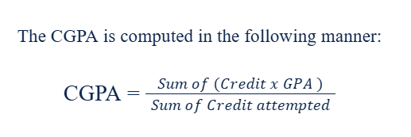

Frequently Asked Questions
Find quick answers to common academic questions
How do I register for courses?
You can register for courses through the BRAC University SLMS Portal - Connect during the official registration period.Check the procedure at academic advising panel in "Academic Procedures" page.
What is the minimum CGPA required to graduate?
The minimum CGPA required to graduate from BRAC University is typically 2.00. However, specific departments or programs might have higher requirements.
How can I pay my tuition fees?
You can pay your tuition fees via both online and offline. Payment procedure is mentioned at at payment procedure panel in "Academic Procedures" page.
What should I do if I lose my student ID card?
If you lose your student ID card, you should immediately report it to the Student Information Center & DCO ma'am and apply for a duplicate. There might be a processing fee.
Can I drop a course after the add/drop period?
Dropping a course after the official add/drop period usually requires special permission and may charge a processing fee. However, deadlines to add/drop/swap courses:
-Withdraw With 100 % refund : June 19 - June 23, 2025
-Withdraw With 75 % refund : June 24 - June 30, 2025.
-Withdraw With W Grade (No Refund) : July 1 - July 5, 2025
How is my GPA calculated?

What happens if I fail to pay my fees on time?
Failure to pay fees on time may result in late payment penalties [at a rate of Tk.100 per day], blocking of academic services (e.g., advising hold, access to grades) . You may apply for installment payment. Contact the Accounts Office immediately if you face difficulties.
How do I apply for academic leave?
A student may be granted leave of absence or semester drop for a period of up to three consecutive semesters or one academic year, subject to the student meeting academic requirements. This arrangement does not apply to students who received academic probation or who have been expelled from the university on disciplinary grounds or excluded on academic grounds. The decision to grant leave of absence will rest with the Dean or Head of Department in consultation with the Registrar. A student granted leave of absence must register in the following semester immediately after the expiry of the leave period.
Talk to DCO ma'am regarding this issue.
Can I get a duplicate student ID if mine is damaged?
Yes, you can apply for a duplicate student ID card if yours is damaged. The process is similar to replacing a lost card and usually involves a fee. Visit the Student Information Center (SIC) for details.
Do I need to do self-advising?
As first-semester students, you do not need to confirm your course advising. The Registrar’s Office will automatically complete the course selection process for all new students and for those selected for the Residential Semester (RS).
How can I open a library account?
The full process in mentioned in "Academic Procedures" page.
How can I use campus printer?
The full process in mentioned in "Academic Procedures" page.
How can I borrow any book from library?
The full process in mentioned in "Academic Procedures" page.
What is the grading scale used at BRAC University?
BRAC University uses a letter grading system with corresponding grade points.
Grade Scale
| A+ | 97.00-100 | 4 | Exceptional |
| A | 89.50-96.99 | 4 | Excellent |
| A- | 84.50-89.49 | 3.7 | |
| B+ | 79.50-84.49 | 3.3 | |
| B | 74.50-79.49 | 3.0 | Good |
| B- | 69.50-74.49 | 2.7 | |
| C+ | 64.50-69.49 | 2.3 | |
| C | 59.50-64.49 | 2.0 | Fair |
| C- | 57.00-59.49 | 1.7 | |
| D+ | 55.00-56.99 | 1.3 | |
| D | 52.00-55.00 | 1.0 | Poor |
| D- | 50.00-52.00 | 0.7 | |
| F | 0.00-50.00 | 0.0 | Failure |
Still Need Help?
Can't find what you're looking for? Feel free to reach out directly!
Contact Information
- Email: shazzad.ahammed.shuvo@g.bracu.ac.bd
- Facebook: Shazzad Ahammed Shuvo
- Whatsapp: 01987909394
- Website: Shazzad Ahammed Shuvo
Other Resources
- Office of the registrar: registrar@bracu.ac.bd
- Student Information Centre (SIC): sic@bracu.ac.bd
- Office of the Proctor: proctor@bracu.ac.bd
- Office of Academic Advising (OAA): bracu-oaa@bracu.ac.bd
- University Medical Centre: medicalcenter@bracu.ac.bd